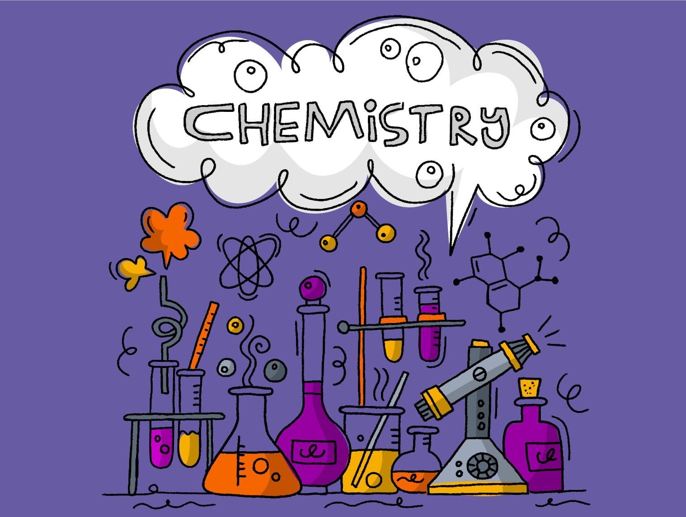

11-22-2020 to 04-27-2021 ~ Girvin Djapardi
Common Misconceptions in IGCSE Chemistry

Welcome back!
This post will be the start of a new series. I have written quite a lot of info regarding exams and revision so today, we will be delving deep into the content of the subject itself.
By no means are we going to be revising the entire syllabus. Instead, we will be highlighting key portions that I myself often struggled to get a firm grasp of. The first one will be:
The Difference between Intermolecular and Intramolecular Force
Why this, in particular, you may ask. Simply said, I found a huge number of students finding both words to be of the same thing. It clearly is not. Although extensive understanding will be achieved not in IGCSE but in higher education, being able to differentiate one from the other will help you answer questions with ease.
In chapter 2, different types of bonding are studied, namely ionic, covalent and metallic. Now, students often struggle to understand the distinct characteristics each type of bonding possesses and the reasoning behind these differences.
Take an example of the question:
Explain the difference in the boiling point of that of a covalent and ionic compound with respect to their bonding.
Students usually know that the boiling point of simple covalent compounds is way lower than that of ionic compounds. It is often known that ionic bonds are strong and hence, a greater amount of energy is required to break it. This leads to students thinking covalent bonds are weak but this is simply not true.
Now, before delving into the core of the problem, let us first see how a detailed and accurate answer will look like.
Ionic compounds have a high melting point due to the strong electrostatic force of attraction between oppositely charged ions which require high amounts of energy to break. On the other hand, covalent compounds have weak intermolecular force and this requires less energy to break.
Now, let us try to unveil the confusion that is caused by this question. As stated above, students do know that ionic compounds have a higher boiling point compared to covalent compounds which cause students to think that covalent compounds are week. This is not true.
Ionic bond, covalent bond and metallic bond and examples of intramolecular force.
Now, the picture to the side is from KhanAcademy. Right now, there is no need to understand the fancy terms such as that of polar or hydrogen bonding. However, what I want you to notice is how there are 2 different bonding present. One is the bonding within the one molecule of water itself. This is represented by the black lines are the bonding between hydrogen and oxygen.
On the other hand, the bonding represented by the dotted red line is between different water molecules. You can think of it this way. In one glass of water, there are enormous amounts of water molecules (remember that one molecule of water is really small and in 1 mol of water, there are 6.02 x 10^23 particles). These water molecules are all bonded together which is why we see the water in the glass of water as one body.
Now, what you need to know is that the black lines are intramolecular force and the red lines are intermolecular force.
A magic phrase to takeaway is that intramolecular force is always stronger than intermolecular force. In fact, in giant covalent compounds such as that of diamond, we see that covalent bond is stronger to that of ionic and metallic. (Diamond has melting point close to 4000 degrees Celsius)
So, we cannot say covalent bond is weak as it is a type of intramolecular force. Hence, it is the bonding of one molecular to another that is weak. The intermolecular force is the one that is weak.
Hence, students often choose to just memorize the answer to this type of question as their lie exceptions. If you notice, in the case of an ionic compound, we take into account its intramolecular force but in the case of covalent compounds, we take into account intermolecular force.
Why is this?
The easy route right now would be to just memorize the answer for each type of answer. However, understanding this concept will go a long way and yield precious rewards.
It is rather simple. When comparing the melting/boiling point, we usually look at its intermolecular force as this is the bond being broken when energy is supplied. A way to think about this is if we boil water and intramolecular force is broken, hydrogen and oxygen are separated from each other and hence, it is no longer water molecule. This is not true as we know steam is still water but in a gaseous state. We are simply breaking the bonding between molecules.
However, with the case of ionic compounds, there is no intermolecular force. We know this as the only bond that is present is between oppositely charged particles. This is why when we supply enough heat to melt an ionic compound, it melts and forms a molten solution consisting of free moving charged ions.
However, it is a different case for covalent compounds. In covalent compounds, there lie 2 bonds. One is within the molecule itself and the other is between the molecules. That is why with respect to covalent compounds, we look at intermolecular force and not intramolecular force.
It isn't chemistry if there aren't more exceptions but if the understanding is there, no problem arises. With respect to giant covalent compounds, we look at intramolecular force. Why so? The reason is similar to that of ionic compounds. Covalent bond is the only bond present as with examples of diamond, all electrons are used up during bonding and hence, covalent bond is the only bonding that exists. This also explains why giant covalent compounds have a very high melting point.
Well, that took longer than expected. Hopefully, this clears the confusion. However, if you have any questions at all, feel free to contact me or leave a comment below.
Bye!
Energetics.
I find Energetics as one of those topics that are often misinterpreted or misunderstood by students. The concept of losing and gaining heat seems to be an issue, especially with all the intricate terminology. Here, I list down the facts you need to get right and the tips I suggest to avoid confusion.
1) When talking about gaining or losing heat, it is always with respect to the surrounding. This is because it is impossible to measure the energy level with respect to the system itself. Henceforth, when the temperature is said to increase, this is an exothermic reaction as heat is given out to the surroundings.
2) People tend to relate endothermic and exothermic to chemical reactions. This is not the case. There are plenty of physical reactions that involve the net gain and loss of heat. In fact, during a reaction, when bonds are being broken, this is described to be endothermic as energy is required(and hence absorbed) to break bonds. Vice versa is true. Bond formation is exothermic as when bonds are formed, energy is released.
3) This flows nicely to a crucial misconception. Students often assume that when a reaction is classified as exothermic, it only releases heat or that when a reaction is endothermic, it only absorbs heat. This is extremely inaccurate. Remember that in any chemical reaction, bond formation and bond breaking occurs. Hence, energy is both absorbed and released throughout the process. It is just that for different reactions, the net energy involved is different. Some reactions may release more heat than when it absorbs(exothermic) and some reactions may absorb more energy than it releases(endothermic). The discussion here is net energy.
Before going to number 4, a great example of the concept illustrated in number 3 would be the candle. To light up a candle, an initial spark is required to light up the wick. This is endothermic(as energy is being absorbed). After this has occurred, the candle would then be able to release energy. Notice how this would be an exothermic reaction as for the most part, energy is being released but do take note of how the initial reaction required energy being absorbed to start.
4) Last but not least, although very trivial, students often do not understand the reaction that occurs in a Hydrogen fuel cell. By no means do they have to understand the complicated mechanism, however, the reaction that is occurring must be understood. When hydrogen undergoes combustion under the presence of excess oxygen, water is formed. The fact that no pollutants and greenhouse gases are produced is why this method is getting popular.
And that is it for part 2. If you have any suggestions for part 3, leave a comment down below!
Until next time!
Hey guys!
Welcome back to another post!
Today we will be looking at another misconception.
Electrolysis!
Now, electrolysis does not cause a lot of misconceptions but rather, it causes a lot of confusion. It is definitely the trickier topic.
However, I will be breaking it down into manageable chunks. Hopefully with these guidelines, answering questions would be a whole lot easier.
1) Electrolysis is defined as the decomposition of an ionic compound in molten or aqueous state by using electricity.
2) The simplest form of electrolysis is when the ionic compound is in molten state. The products are simply the cation and anion of the compound itself.
3) CNAPEL --> Cathode is Negative and Anode is Positive. Say NaCl is being electrolyzed. Na+ will then form in the cathode as being a positive ion, it will be attracted to a negatively charged region. The same is true for Cl-
4) When dealing with aqueous solutions, there are general rules to help us determine which ion will form.
a) Hydrogen will always be produced in cathode unless there is a metal ion less reactive than it. An example would be copper.
b) If the ionic solution is concentrated and a halide is present, halide will always form. However, if ANY ionic solution is dilute, oxygen will form.
5) A common tricky question is when students are asked to give all the products when brine(concentrated NaCl) is electrolyzed. Per the rules we established earlier, Hydrogen and Chlorine gas will form. However, do realize that when we take out Hydrogen and Chlorine, this lives Na+ and OH- which then combines to form NaOH. This is the 3rd product.
6) Remember that in a simple cell, the further apart the metals are in the reactivity series, the larger magnitude of electricity is produced.
7) It is commonly asked why cryolite is used when extracting aluminum. It is used to lower the melting point of the solution. Furthermore, it acts as a solvent and hence, helps with the overall conductivity of the solution.
8) Carbon electrodes are also regularly replaced in the extraction of aluminum as at high temperatures, it will react with oxygen.
9) A thing worthy to be understood is that during electrolysis, ions move around in the electrolyte and electrons move around the circuit only.
10) It is very important to take into account which products are being formed in the respective electrodes, especially when the electrodes are reactive. This gives us clues as to which electrode will increase/decrease in size.
11) Last but not least, consider the electrolysis of copper sulfate with the presence of copper electrodes. In the cathode, copper will be formed but in the anode, copper ions will be formed. The rate at which this occurs is equal for both electrodes and hence, copper sulfate retains its blue color.
And that's it!
If you have any recommendations at to which topics I should cover, be sure to tell me!
Until next time!
For today's post, we will look at oxidation and reduction.
We know that there are several criteria we can look at when determining whether or not oxidation or reduction has taken place.
We may be familiar with the term OilRig where it stands for Oxidation is loose, Reduction is gain. The losing/gaining here refers to electrons.
When we tackle redox equations, students often get confused about which criteria should they rely on. It gets especially tricky when we see an increase in the number of hydrogen but also an increase in the number of oxygen.
However, the most important aspect to understand and rely on is the last line, which is the increase or decrease in oxidation number.
Now, what is the oxidation number? Oxidation number, oxidation state, refers to the degree of oxidation. In all honesty, that definition confuses us even more. Simply said, oxidation state refers to the number of electrons a species has lost or gained.
Say we take an example of +1 Na ion. Here, the oxidation number is +1 which means that Na has lost one electron. Why lost, if the sign is (+). Well, the answer is very logical. As we have learned in previous units, an element can only lose or gain electrons as protons in the nucleus are bound by a very strong force called nuclear force. Hence, if an element is to lose one electron, that would mean that the overall charge of the species is now positive.
This is why when Na loses one electron to form a +1 Na ion, it is oxidized as its oxidation state goes from 0 --> 1.
Per common sense, elements and compounds do not have any oxidation number as they have neither lost nor gained any electrons. This is why their O.S is equal to zero.
With that being said, some students get confused when this is mentioned:
Its oxidation state has increased from (-7) to (-4).
This is confusing for 2 reasons. One of them is that they are both still negative. Students incorrectly assume that an increase in oxidation state would always mean that the final oxidation state is positive. This is false. As long as it has increased, it has been oxidized.
Another popular example is if its O.S increases from (-2) to (0).
This is an example of a negative ion oxidizing to an element or compound.
Another reason why that is confusing as students think that only metals can oxidize. In a sense, this is similar to the example I gave about Na.
They have this assumption as more often than not, metals need to lose electrons to become stable. If we look at the periodic table, metals have 4 or fewer valence electrons which explain them losing electrons to achieve octet configuration. Per the discussion above, losing electrons is oxidation.
Nothing is wrong with the logic above. However, we should not assume that non-metal ions cannot oxidize. As long as in the chemical reaction, we see it increasing in O.S, it has oxidized.
2KI + Cl2 --> 2KCl + I2
I apologize for the lack of subscripts for the equation above. Nevertheless, this is a very common equation. We see that iodide has an oxidation state of -1 in the reactants. After it has been displaced by the chlorine due to it being less reactive, it forms its element and we see an increase in oxidation state from (-1) to (0). This is what I mean.
And that is it guys for this post's misconception. If you have any questions or other misconceptions you want me to talk about, feel free to write them down in the comment section down below!